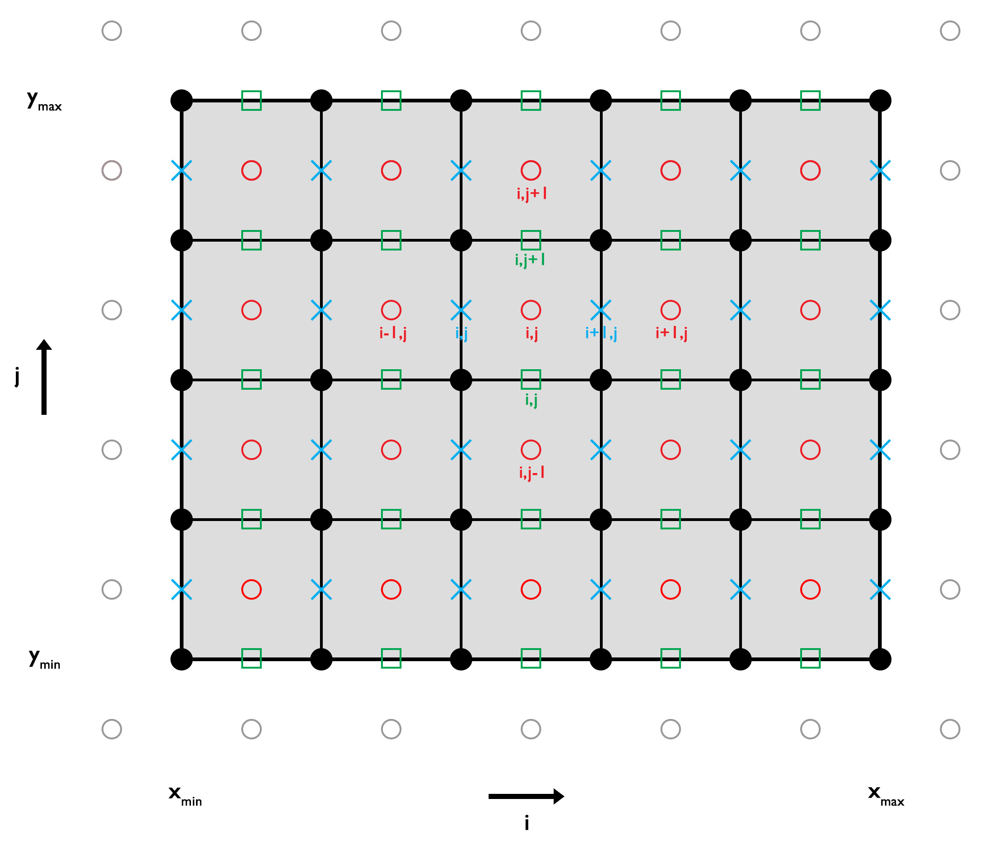

Temperature Equation (2D)
In two dimesions ($x$ and $y$), the conductive part of the temperature equation is described by (assuming only radiogenic heating):
\[\begin{equation} \rho c_p \frac{\partial T}{\partial t} = -\frac{\partial q_x}{\partial x} -\frac{\partial q_y}{\partial y} + \rho H, \end{equation}\]
or including Fourier’s law (assuming variable thermal parameters):
\[\begin{equation} \rho c_p \frac{\partial T}{\partial t} = \frac{\partial}{\partial x} k \frac{\partial T}{\partial x} + \frac{\partial}{\partial y} k \frac{\partial T}{\partial y} + \rho H. \end{equation}\]
Assuming that the thermal parameters are constant, equation $(2)$ simplifies to:
\[\begin{equation} \frac{\partial T}{\partial t} = \kappa \left(\frac{\partial^2 T}{\partial x^2} + \frac{\partial^2 T}{\partial y^2}\right) + \frac{Q}{\rho c_p}, \end{equation}\]
where $\kappa = k/\rho /c_p$ is the thermal diffusivity [ $m^2$ ] and $Q=\rho H$ is the heat production rate per volume [ $W/m^3$ ]. In case of an explicit 2-D finite difference approach, the heat diffusion stability criterion is defined as
\[\begin{equation} \Delta{t} < \frac{1}{2 \kappa \left(\frac{1}{\Delta{x^2}}+\frac{1}{\Delta{y^2}}\right)} \end{equation}\]
(assuming equal grid spacing in $x$- and $y$-direction).
Discretization
To numerically solve equation $(3)$ one needs to discretize the numerical domain and assign the parameters to their corresponding nodes.

Figure 1. 2-D Discretization. Conservative finite difference grid to solve the 2-D conductive part of the temperature equation. The temperature is defined on the centroids (red circles) and the heat flux between the vertices (horizontal - blue x, vertical - green square). The temperature ghost nodes (grey circles) are used to properly implement Dirichlet and Neumann thermal boundary conditions.
Explicit, FTCS (or Forward Euler Method)
In two dimensions, the partial derivatives of equation $(3)$ can be approximated by an explicit FTCS finite difference approach by:
\[\begin{equation} \frac{T_{i,j}^{n+1} - T_{i,j}^{n} }{\Delta t} = \kappa \left( \frac{T_{i-1,j}^{n} - 2T_{i,j}^{n} + T_{i+1,j}^{n}}{\Delta{x}^2} + \frac{T_{i,j-1}^{n} - 2T_{i,j}^{n} + T_{i,j+1}^{n}}{\Delta{z^2}} \right) + \frac{Q_{i,j}^n}{\rho c_p} \end{equation}\]
where $i$ and $j$ are the horizontal and vertical index of the numerical finite difference grid, $n$ is the time step index, $\Delta{t}$ is the time step, and $\Delta{x}$ and $\Delta{y}$ are the horizontal and vertical grid resolution, respectively. Equation $(5)$ contains know and unknow parameters and one can rearrange them to solve the equation for the unknowns as:
\[\begin{equation} T_{i,j}^{n+1} = T_{i,j}^{n} + a\left(T_{i-1,j}^{n} - 2T_{i,j}^{n} + T_{i+1,j}^{n}\right) + b\left(T_{i,j-1}^{n} - 2T_{i,j}^{n} + T_{i,j+1}^{n}\right) + \frac{Q_{i,j}^n \Delta{t}}{\rho c_p}, \end{equation}\]
where $a = \frac{\kappa \Delta{t}}{\Delta{x^2}}$ and $b = \frac{\kappa \Delta{t}}{\Delta{y^2}}$. For more details on how this is implemented see ForwardEuler.jl.
Boundary Conditions
The Dirichlet boundary condition defines a constant temperature along the boundary, such that the temperatures at the left (West), right (East), bottom (South), and top (North) ghost nodes are defined as:
\[\begin{equation} T_{G,W} = 2T_{BC,W} - T_{1,:}, \end{equation}\]
\[\begin{equation} T_{G,E} = 2T_{BC,E} - T_{ncx,:}, \end{equation}\]
\[\begin{equation} T_{G,S} = 2T_{BC,S} - T_{:,1}, \end{equation}\]
\[\begin{equation} T_{G,N} = 2T_{BC,N} - T_{:,ncy}, \end{equation}\]
where $T_{G,W}$, $T_{G,E}$, $T_{G,S}$, and $T_{G,N}$ and $T_{BC,W}$, $T_{BC,E}$, $T_{BC,S}$, and $T_{BC,N}$ are the temperature at the left, right, bottom, and top ghost nodes and the constant temperatures at the left, right, bottom, and top boundary, respectively.
The Neumann boundary condition defines that the variation of a certain parameter across the boundary is defined, that is, for example, the temperature across the boundary or thermal heat flux $q$ through the boundary. The temperature at the ghost nodes is then defined as:
\[\begin{equation} T_{G,W} = T_{1,:} - c_{W} \Delta{x}, \end{equation}\]
\[\begin{equation} T_{G,E} = T_{ncx,:} + c_{E} \Delta{x}, \end{equation}\]
\[\begin{equation} T_{G,S} = T_{:,1} - c_{S} \Delta{y}, \end{equation}\]
\[\begin{equation} T_{G,N} = T_{:,ncy} + c_{N} \Delta{y}, \end{equation}\]
where
\[\begin{equation} \left. c_{W} = \frac{\partial{T}}{\partial{x}} \right\vert_{W}, \left. c_{E} = \frac{\partial{T}}{\partial{x}} \right\vert_{E}, \left. c_{S} = \frac{\partial{T}}{\partial{y}} \right\vert_{S}, \left. c_{N} = \frac{\partial{T}}{\partial{y}} \right\vert_{N}, \end{equation}\]
are the constant heat fluxes along the left, right, bottom, and top boundary, respectively.
Now, one can solve equation $(6)$ for the temperature on the centroids at the next time step using the defined temperature at the ghost nodes where necessary.
Numerical Schemes
Within the example code Gaussian_Diffusion.jl different numerical schemes are used to solve the conductive part of the temperature equation (i.e., explicit, implicit, Crank-Nicholson Approach, and defection correction) and the results are compared with the analytical solution. In the following, each discretization scheme is briefly described.
Implicit (or Backward Euler Method)
In 2-D, the temperature equation is then given as:
\[\begin{equation} \frac{T_{i,j}^{n+1}-T_{i,j}^n}{\Delta t} = \kappa \left( \frac{T_{i-1,j}^{n+1}-2T_{i,j}^{n+1}+T_{i+1,j}^{n+1}}{\Delta x^2} + \frac{T_{i,j-1}^{n+1}-2T_{i,j}^{n+1}+T_{i,j+1}^{n+1}}{\Delta y^2} \right) + \frac{Q_{i}^n}{\rho c_p}, \end{equation}\]
where $n$ is the current and $n+1$ the next time step, $\Delta{t}$ is the time step length, $\Delta{x}$ and $\Delta{y}$ are the horizontal and vertical grid spacing, and $i$ and $j$ are the horizontal and vertical indeces, respectively. Rearranging equation $(16)$ into known and unknown variables, one obtains a linear system of equations in the form of:
\[\begin{equation} -b T_{i,j-1}^{n+1} - a T_{i-1,j}^{n+1} + \left(2a + 2b + c \right) T_{i,j}^{n+1} - a T_{i+1,j}^{n+1} - b T_{i,j+1}^{n+1} = c T_{i,j}^n + \frac{Q_{i,j}^n}{\rho c_p}, \end{equation}\]
where $a = \frac{\kappa}{\Delta{x^2}}$, $b = \frac{\kappa}{\Delta{y^2}}$, and $c = \frac{1}{\Delta{t}}$.
Boundary Conditions
The temperature on the ghost nodes to solve the equations on the centroids adjacent to the boundary are defined as before (equations $(7)-(14)$ ). To obtain a symmetric coefficient matrix to solve the linear system of euqations, however, one needs to modify the coefficients of the centroids adjacent to the boundary and the corresponding right-hand side, such that the equations are defined as:
Dirichlet
West ($i=1$)
\[\begin{equation} -b T_{1,j-1}^{n+1} + \left(3 a + 2b + c\right) T_{1,j}^{n+1} - a T_{2,j}^{n+1} - b T_{1,j+1}^{n+1} = c T_{1,j}^{n} + 2 a T_{BC,W} + \frac{Q_{i,j}}{\rho c_p}, \end{equation}\]
East ($i = ncx$)
\[\begin{equation} -b T_{ncx,j-1}^{n+1} - aT_{ncx-1,j}^{n+1} + \left(3 a + 2b + c\right) T_{ncx,j}^{n+1} - b T_{ncx,j+1}^{n+1} = c T_{ncx,j}^{n} + 2 a T_{BC,E} + \frac{Q_{i,j}}{\rho c_p}, \end{equation}\]
South ($j = 1$)
\[\begin{equation} -a T_{i-1,1}^{n+1} + \left(2a + 3b + c\right) T_{i,1}^{n+1} - a T_{i+1,1}^{n+1} - bT_{i,2}^{n+1} = c T_{i,1}^{n} + 2 b T_{BC,S} + \frac{Q_{i,j}}{\rho c_p}, \end{equation}\]
North ($j = ncy$)
\[\begin{equation} -b T_{i,ncy}^{n+1} - aT_{i-1,ncy}^{n+1} + \left(2a + 3b + c\right) T_{i,ncy}^{n+1} - a T_{i+1,ncy}^{n+1} = c T_{i,ncy}^{n} + 2 b T_{BC,N} + \frac{Q_{i,j}}{\rho c_p}, \end{equation}\]
Neumann
West ($i=1$)
\[\begin{equation} -b T_{1,j-1}^{n+1} + \left(a + 2b + c\right) T_{1,j}^{n+1} - a T_{2,j}^{n+1} - b T_{1,j+1}^{n+1} = c T_{1,j}^{n} - a c_W \Delta{x} + \frac{Q_{i,j}}{\rho c_p}, \end{equation}\]
East ($i = ncx$)
\[\begin{equation} -b T_{ncx,j-1}^{n+1} - aT_{ncx-1,j}^{n+1} + \left(a + 2b + c\right) T_{ncx,j}^{n+1} - b T_{ncx,j+1}^{n+1} = c T_{ncx,j}^{n} + a c_E \Delta{x} + \frac{Q_{i,j}}{\rho c_p}, \end{equation}\]
South ($j = 1$)
\[\begin{equation} -a T_{i-1,1}^{n+1} + \left(2a + b + c\right) T_{i,1}^{n+1} - a T_{i+1,1}^{n+1} - bT_{i,2}^{n+1} = c T_{i,1}^{n} - b c_S \Delta{y} + \frac{Q_{i,j}}{\rho c_p}, \end{equation}\]
North ($j = ncy$)
\[\begin{equation} -b T_{i,ncy}^{n+1} - aT_{i-1,ncy}^{n+1} + \left(2a + b + c\right) T_{i,ncy}^{n+1} - a T_{i+1,ncy}^{n+1} = c T_{i,ncy}^{n} + b c_N \Delta{y} + \frac{Q_{i,j}}{\rho c_p}, \end{equation}\]
Defection Correction Method
The coefficients of the matrix can be derived, for example, via:
\[\begin{equation} \frac{\partial{T}}{\partial{t}} - \kappa \left( \frac{\partial^2{T}}{\partial{x}^2} + \frac{\partial^2{T}}{\partial{y}^2} \right) - \frac{Q_{i,j}^n}{\rho c_p} = R, \end{equation}\]
\[\begin{equation} \frac{T_i^{n+1}-T_i^{n}}{\Delta{t}} - \kappa \left( \frac{T_{i-1,j}^{n+1} - 2 T_{i,j}^{n+1} + T_{i+1,j}^{n+1}}{\Delta{x}^2} + \frac{T_{i,j-1}^{n+1} - 2 T_{i,j}^{n+1} + T_{i,j+1}^{n+1}}{\Delta{y}^2} \right) - \frac{Q_{i,j}^n}{\rho c_p} = R, \end{equation}\]
\[\begin{equation} -b T_{i,j-1}^{n+1} - a T_{i-1,j}^{n+1} + \left(2a + 2b + c \right) T_{i,j}^{n+1} - a T_{i+1,j}^{n+1} - b T_{i,j+1}^{n+1} - c T_{i,j}^n - \frac{Q_{i,j}^n}{\rho c_p} = R, \end{equation}\]
where
\[\begin{equation} a = \frac{\kappa}{\Delta{x}^2},\ b = \frac{\kappa}{\Delta{y}^2},\ \ \textrm{and} \ c = \frac{1}{\Delta{t}}, \end{equation}\]
For more details on the theory of the defect correction see here and on how this is implemented, see BackwardEuler.jl.
Cranck-Nicolson Approach (CNA)
In 2-D, equation $(3)$ is described in a finite difference form as:
\[\begin{equation} \frac{T_{i,j}^{n+1} - T_{i,j}^{n}}{\Delta t} = \frac{\kappa}{2}\frac{(T_{i-1,j}^{n+1}-2T_{i,j}^{n+1}+T_{i+1,j}^{n+1})+(T_{i-1,j}^{n}-2T_{i,j}^{n}+T_{i+1,j}^{n})}{\Delta x^2} + \frac{\kappa}{2}\frac{(T_{i,j-1}^{n+1}-2T_{i,j}^{n+1}+T_{i,j+1}^{n+1})+(T_{i,j-1}^{n}-2T_{i,j}^{n}+T_{i,j+1}^{n})}{\Delta y^2} \end{equation}\]
Rearranging equation $(30)$ into known and unknown variables, one obtains a linear system of equations in the form of:
\[\begin{equation} -b T_{i,j-1}^{n+1} -aT_{i-1,j}^{n+1}+\left(2a + 2b + c\right)T_{i,j}^{n+1} -aT_{i+1,j}^{n+1} -b T_{i,j+1}^{n+1} = b T_{i,j-1}^{n} +aT_{i-1,j}^{n}-\left(2a + 2b - c\right)T_{i,j}^{n} +aT_{i+1,j}^{n} +b T_{i,j+1}^{n} \end{equation}\]
Similar to the implicit method, we need to modify the coefficients and the right-hand side using different boundary conditions to obtain a symmetric coefficient matrix. Thus, the equations for the centroids adjacent to the boundaries are defined as:
Dirichlet
West ($i=1$)
\[\begin{equation} -b T_{1,j-1}^{n+1} + \left(3a + 2b + c \right) T_{1,j}^{n+1} -a T_{2,j}^{n+1} - b T_{1,j+1}^{n+1} = b T_{1,j-1}^{n} - \left( 3a + 2b - c \right) T_{1,j}^{n} + a T_{2,j}^{n} + b T_{1,j+1}^{n} + 4 a T_{BC,W}, \end{equation}\]
East ($i = ncx$)
\[\begin{equation} -b T_{ncx,j-1}^{n+1} - a T_{ncx-1,j}^{n+1} + \left(3a + 2b + c \right) T_{ncx,j}^{n+1} -b T_{ncx,j+1}^{n+1} = b T_{ncx,j-1}^{n} + a T_{ncx-1,j}^{n} - \left( 3a + 2b - c \right) T_{ncx,j}^{n} + b T_{ncx,j+1}^{n} + 4 a T_{BC,E}, \end{equation}\]
South ($j = 1$)
\[\begin{equation} -a T_{i-1,1}^{n+1} + \left(2a + 3b + c \right) T_{i,1}^{n+1} - a T_{i+1,1}^{n+1} - b T_{i,2}^{n+1} = a T_{i-1,1}^{n} - \left( 2a + 3b - c \right) T_{i,1}^{n} + a T_{i+1,1}^{n} + b T_{i,2}^{n} + 4 b T_{BC,S}, \end{equation}\]
North ($j = ncy$)
\[\begin{equation} -b T_{i,ncy-1}^{n+1} + a T_{i-1,ncy}^{n+1} + \left(2a + 3b + c \right) T_{i,ncy}^{n+1} - a T_{i+1,ncy}^{n+1} = b T_{i,ncy-1}^{n} + a T_{i-1,ncy}^{n} - \left( 2a + 3b - c \right) T_{i,ncy}^{n} + a T_{i+1,ncy}^{n} + 4 b T_{BC,N}. \end{equation}\]
Neumann
West ($i=1$)
\[\begin{equation} -b T_{1,j-1}^{n+1} + \left(a + 2b + c \right) T_{1,j}^{n+1} - a T_{2,j}^{n+1} - b T_{1,j+1}^{n+1} = b T_{1,j-1}^{n} - \left( a + 2b - c \right) T_{1,j}^{n} + a T_{2,j}^{n} + b T_{1,j+1}^{n} - 2 a c_W \Delta{x}, \end{equation}\]
East ($i = ncx$)
\[\begin{equation} -b T_{ncx,j-1}^{n+1} - a T_{ncx-1,j}^{n+1} + \left(a + 2b + c \right) T_{ncx,j}^{n+1} - b T_{ncx,j+1}^{n+1} = b T_{ncx,j-1}^{n} + a T_{ncx-1,j}^{n} - \left( a + 2b - c \right) T_{ncx,j}^{n} + b T_{ncx,j+1}^{n} + 2 a c_E \Delta{x}, \end{equation}\]
South ($j = 1$)
\[\begin{equation} -a T_{i-1,1}^{n+1} + \left(2a + b + c \right) T_{i,1}^{n+1} - a T_{i+1,1}^{n+1} - b T_{i,2}^{n+1} = a T_{i-1,1}^{n} - \left( 2a + b - c \right) T_{i,1}^{n} + a T_{i+1,1}^{n} + b T_{i,2}^{n} - 2 b c_S \Delta{y} \end{equation}\]
North ($j = ncy$)
\[\begin{equation} -b T_{i,ncy-1}^{n+1} + a T_{i-1,ncy}^{n+1} + \left(2a + b + c \right) T_{i,ncy}^{n+1} - a T_{i+1,ncy}^{n+1} = b T_{i,ncy-1}^{n} + a T_{i-1,ncy}^{n} - \left( 2a + b - c \right) T_{i,ncy}^{n} + a T_{i+1,ncy}^{n} + 2 b c_N \Delta{y} \end{equation}\]
For more details on how this is implemented, see here.
Alternating Direction Implicit
In 2-D, equation $(3)$ for the ADI approach for each half-step in time is given as:
\[\begin{equation} \frac{T_{i,j}^{n+1/2}-T_{i,j}^n}{\Delta t/2} = \kappa \left( \frac{T_{i-1,j}^n-2T_{i,j}^n+T_{i+1,j}^n}{\Delta x^2} + \frac{T_{i,j-1}^{n+1/2}-2T_{i,j}^{n+1/2}+T_{i,j+1}^{n+1/2}}{\Delta y^2} \right) \end{equation}\]
\[\begin{equation} \frac{T_{i,j}^{n+1}-T_{i,j}^{n+1/2}}{\Delta t/2} = \kappa \left( \frac{T_{i-1,j}^{n+1}-2T_{i,j}^{n+1}+T_{i+1,j}^{n+1}}{\Delta x^2} + \frac{T_{i,j-1}^{n+1/2}-2T_{i,j}^{n+1/2}+T_{i,j+1}^{n+1/2}}{\Delta y^2} \right) \end{equation}\]
This results in two linear sets of linear system of euqations with coefficient matrices for the left and right hand side of the equations. The corresponding coefficients and right hand side of each linear system of equations needs to be adjusted according to the given boundary conditions, as shown in the CNA, for example. For more details on how this is implemented, see here.
For the explicit solver and the defect correction method, one needs the extended temperature field, which includes the ghost nodes, to solve the temperature equation. Thereby, the current temperature field is assigned to the centroids of the extended field to use it as the old temperature and to calculate the temperature at the new time step. For the remaining solvers, the current temperature is assigned to the known righ-hand side vector, and one needs to collect the coefficients for each matrix to solve for the unknown temperature.
Steady State Solution
Note: So far, variable thermal parameters are only implemented in the 1-D and 2-D steady state solutions (except for the 2-D defect correction method, which also enables a time-dependent 2-D solution for variable thermal parameters).
In steady state, one assumes that the temperature does not vary over time (i.e., $\frac{\partial T}{\partial t}=0$) and the temperature equation simplifies to an elliptic partial differential equation (i.e., the Poission equation).
Poisson Solution (constant k)
For constant thermal parameters the conductive part of the temperature equation is given by:
\[\begin{equation} 0 = \left( \frac{\partial^2 T}{\partial x^2} + \frac{\partial^2 T}{\partial z^2} \right) + \frac{Q}{k}. \end{equation}\]
For the approximation of the spatial partial derivatives with finite difference expressions, a central finite difference is chosen and equation $(42)$ is then given as:
\[\begin{equation} 0 = \left( \frac{T_{i-1,j} - 2T_{i,j} + T_{i+1,j}}{\Delta x^2} + \frac{T_{i,j-1} - 2T_{i,j} + T_{i,j+1}}{\Delta y^2} \right) + \frac{Q}{k}, \end{equation}\]
where $i$ and $j$ are the indices for the $x$- and $y$-direction, respectively. Now, one can rearrange the equation by known ($Q$, $k$) and unknown ($T$) variables, wich results in a linear system of equations in the form of:
\[\begin{equation} bT_{i,j-1} + aT_{i-1,j} - 2(a+b)T_{i,j} + aT_{i+1,j} + bT_{i,j+1} = -\frac{Q}{k}, \end{equation}\]
where $a = \frac{1}{\Delta x^2}$ and $b = \frac{1}{\Delta y^2}$.
Here, one can again assume Dirichlet or Neumann boundary conditions, where one can use the temperature on the ghost nodes to properly implement the corresponding boundary conditions. Thereby, one needs to modify the coefficient matrix and the right hand side of the linear system of equations accordingly.
Dirichlet
West ($i=1$)
\[\begin{equation} bT_{1,j-1} - (3a + 2b)T_{1,j} + bT_{1,j+1} + aT_{2,j} = -\frac{Q_{i,j}}{k_{i,j}} - 2aT_{BC,W}. \end{equation}\]
East ($i=ncx$)
\[\begin{equation} aT_{ncx-1,j} + bT_{ncx,j-1} - (3a + 2b)T_{ncx,j} + bT_{ncx,j+1} = -\frac{Q_{i,j}}{k_{i,j}} - 2aT_{BC,E}. \end{equation}\]
South ($j=1$)
\[\begin{equation} aT_{i-1,1} - (2a + 3b)T_{1,1} + bT_{i,2} + aT_{i+1,1} = -\frac{Q_{i,j}}{k_{i,j}} - 2bT_{BC,S}. \end{equation}\]
North ($j=ncy$)
\[\begin{equation} aT_{i-1,ncy} + bT_{i,ncy-1} - (2a + 3b)T_{1,ncy} + aT_{i+1,ncy} = -\frac{Q_{i,j}}{k_{i,j}} - 2bT_{BC,N}. \end{equation}\]
Neumann
West ($i=1$)
\[\begin{equation} bT_{1,j-1} - (a + 2b)T_{1,j} + bT_{1,j+1} + aT_{2,j} = -\frac{Q_{i,j}}{k_{i,j}} + ac_W\Delta{x}. \end{equation}\]
East ($i=ncx$)
\[\begin{equation} aT_{ncx-1,j} + bT_{ncx,j-1} - (a + 2b)T_{ncx,j} + bT_{ncx,j+1} = -\frac{Q_{i,j}}{k_{i,j}} - ac_E\Delta{x}. \end{equation}\]
South ($j=1$)
\[\begin{equation} aT_{i-1,1} - (2a + b)T_{1,1} + bT_{i,2} + aT_{i+1,1} = -\frac{Q_{i,j}}{k_{i,j}} + bc_S\Delta{y}. \end{equation}\]
North ($j=ncy$)
\[\begin{equation} aT_{i-1,ncy} + bT_{i,ncy-1} - (2a + b)T_{1,ncy} + aT_{i+1,ncy} = -\frac{Q_{i,j}}{k_{i,j}} - bc_N\Delta{y}. \end{equation}\]
For more details on how this is implemented see here.
Poisson Solution (variable k)
For variable thermal parameters the steady-state temperature equation is given by (in 2-D):
\[\begin{equation} 0 = \frac{\partial}{\partial x}\left(k_x\frac{\partial T}{\partial x}\right) + \frac{\partial}{\partial y}\left(k_y\frac{\partial T}{\partial y}\right) + Q_{i,j} \end{equation}\]
To properly solve equation $(53)$, one needs to apply a conservative finite difference scheme, such that the heat flux $(q_i = k_i\frac{\partial T}{\partial i})$, and thus the thermal conductivity, is defined between the centroids and the temperature on the centroids (see Figure 1). Considering such a staggered finite difference grid, equation $(53)$ results in a linear system of equations in the form of:
\[\begin{equation} b k_{y;i,j} T_{i,j-1} + a k_{x;i,j} T_{i-1,j} + c T_{i,j} + a k_{x;i+1,j} T_{i+1,j} + b k_{y;i,j+1} T_{i,j+1} + Q_{i,j} = 0, \end{equation}\]
where
\[a = \frac{1}{\Delta{x^2}}, b = \frac{1}{\Delta{y^2}}, \textrm{and} \ c = -a\left(k_{x;i+1,j}+k_{x;i,j}\right) - b\left(k_{y;i,j+1}+k_{y;i,j}\right).\]
For more details on how this is implemented see here.